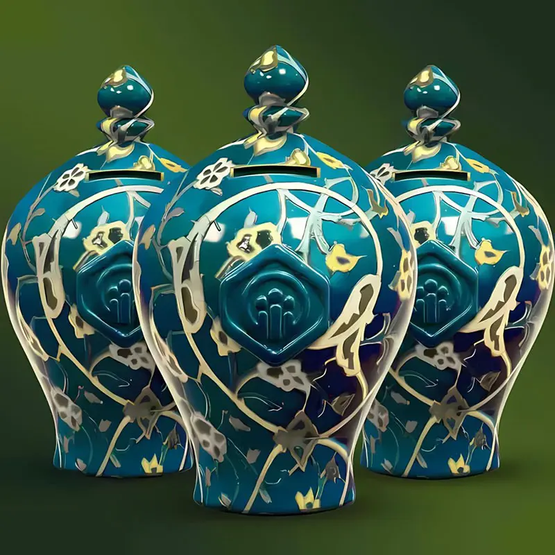

درگاه پرداخت گروه جهادی بسیج — انتخاب نیت خیر
پرش به محتوا
برای مشاهده نیات خیر، روی عنوان بزنید
⌄

کمک به مسجد
وجوهات شرعی
کمک به نیازمندان
نذر نان
صدقه اول ماه
قربانی
نذر عام
وجوهات شرعی
نذر عام
Commissioned by Masjed-Alhadi Development Team
به سفارش و همت تیم توسعه مسجد الهادی